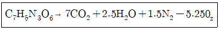
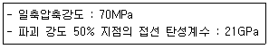
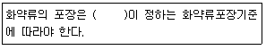
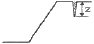
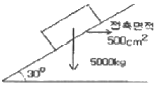

화약류관리기사 (2010-03-07 기출문제)
1과목: 일반화약학
1. 화약류 분해 및 폐기 방법에 대한 설명 중 틀린 것은?(오류 신고가 접수된 문제입니다. 반드시 정답과 해설을 확인하시기 바랍니다.)
- NG 를 가성소다-에틸알코올 용액으로 분해한다.
- RDX 를 가성소다 용액으로 분해한다.
- 아지화납을 가성소다 용액으로 분해한다.
- DONP 를 알코올에 녹여 소각한다.
(정답률: 92%)

2. 전기뇌관의 품질시험에서 내정전기시험 항목의 기준으로 옳은 것은?
- 500pF, 8kV에서 발화하지 않을 것
- 500pF, 10kV에서 발화하지 않을 것
- 2000pF, 8kV에서 발화하지 않을 것
- 2000pF, 10kV에서 발화하지 않을 것
(정답률: 알수없음)
3. 다음 중 화약류 분류에 있어서 폭약에 해당하지 않는 것은?
- 흑색화약
- 뇌홍
- 펜트리트
- 테트릴
(정답률: 알수없음)
4. 다음 화약류에 대한 설명 중 옳은 것은?
- 펜트리트는 물에 녹지 않는다.
- 아지화납은 전기뇌관의 기폭약으로 사용되며 관체는 구리로 만든다.
- 질산암모늄 유제폭약은 경유를 함유하고 있으므로 유상으로 되어 있다.
- 흑색화약은 화염에 예민하지만 마찰과 충격에는 둔감하다.
(정답률: 82%)
5. 뇌관 1개의 저항이 1.4Ω인 전기뇌관 10발을 직렬로 결선하여 제발하려면 최저 몇 V의 전압이 필요한가? (단, 보조모선 길이는 100m이고 한가닥의 저항은 0.03Ω/m이며 발파기의 내부저항은 0, 뇌관 1개당의 소요 전류는 3A로 한다.)
- 80
- 60
- 40
- 20
(정답률: 알수없음)
6. 6호 공업뇌관의 둔성폭약시험에서 기폭해야 하는 시험체의 TNT와 활석 배합비로 옳은 것은? (단, TNT:활석의 비율을 나타낸다.)
- 70%:30%
- 60%:40%
- 50%:50%
- 40%:60%
(정답률: 75%)
7. 다음 중 무연화약의 종류가 아닌 것은?
- 싱글베이스화약
- 트리플베이스화약
- 더블베이스화약
- 터키베이스화약
(정답률: 알수없음)
8. Carlit에 대한 설명으로 옳은 것은?
- 폭소기 다이너마이트, 헥소겐 보다 크다.
- 비중이 6 정도로 매우 큰 편이다.
- NH4CIO4을 기제로 하고 있기 때문에 장기간 저장하면 자연분해 된다.
- 흑색 carlit는 후 gas가 나쁘므로 갱내 사용은 적당하지 않다.
(정답률: 100%)
9. 일반적으로 습면약은 약 몇 ℃에서 건조하는가?
- 0℃이하
- 0~10℃;
- 40~50℃
- 70℃이상
(정답률: 알수없음)
10. TNT의 융점에 가장 가까운 온도는 약 몇 ℃인가?
- 92.5
- 80.7
- 74.5
- 60.5
(정답률: 90%)
11. 젤라틴 다이너마이트를 탄동구포 시험한 결과 흔들림 각도가 16도 였다. RWS는 약 몇 %인가? (단. 기준약 다이너마이트의 흔들림 각도는 18도이다.)
- 79
- 85
- 90
- 95
(정답률: 알수없음)
12. 다음 중 질산염 혼합 화약류가 아닌 것은?
- 무연화약
- 흑색화약
- ANFO폭약
- 질산암모늄 폭약
(정답률: 알수없음)
13. 폭약의 파괴효과를 결정하는 방법으로 도폭선과 납판을 사용하여 폭속을 측정하는 방법은?
- Free acid test
- Heating test
- Hammer test
- Dautriche method
(정답률: 알수없음)
14. 공업뇌관의 성능을 측정하려고 할 때 사용되는 시험법은?
- 가열시험
- 납판시험
- 맹도시험
- 구포시험
(정답률: 알수없음)
15. 쇼크튜브(Shock tube)형 비전기 뇌관의 구성요소와 관계없는 것은?
- 첨장약
- 기폭약
- 지연장치
- 도화선
(정답률: 65%)
16. 다이조디니트로폐놀(DDNP)의 발화점의 범위에 가장 가까운 것은?
- 100~120℃
- 170~190℃
- 240~260℃
- 270~290℃
(정답률: 100%)
17. 미진동파쇄기의 특징이 아닌 것은?
- 진동이나 파쇄물의 비산을 억제하기 위하여 사용하는 것이다.
- 비금속 분말을 주요 재료로 하여 산화제, 안정제를 혼합한다.
- 장약공 사이에 균열을 발생시키는 정도로 생각할 수 있다.
- 소음이나 폭발음 때문에 폭약의 사용이 어려운 곳에서 사용할 수 있다.
(정답률: 알수없음)
18. 초유폭약에 대한 설명으로 옳지 않은 것은?
- 충격 및 마찰 감도가 비교적 둔감하다.
- 약경 30mm 이상은 폭굉피가 불완전하게 전달된다.
- 장전비중이 너무 크면 사압 현상이 나타날 수 있다.
- 후 gas가 나쁘므로 사용시 환기에 주의한다.
(정답률: 알수없음)
19. TNT 1몰(분자량 227.1g)에 대하여 다음의 반응이 이루어 질 때 TNT 1g에 대한 산소평형값은 약 몇 g인가?

- -0.37
- -0.74
- -1.48
- -1.74
(정답률: 알수없음)
20. 다음 중 순폭도에 대한 설명으로 옳은 것은?
- 순폭도는 최대 순폭거리와 약경의 곱으로 표시한다.
- 순폭도는 제조 후 오래됨에 따라 상승한다.
- 순폭도는 폭약의 흡습고화가 진행됨에 따라 상승한다.
- 순폭도는 다른 폭약의 폭굉에 대한 감도이다.
(정답률: 알수없음)
2과목: 발파공학
21. 발파현장에서 암반 천공작업에 의해 발생되는 음향파워레벨이 115dB이다. 수음점이 천공작업을 실시하는 장소와 완전 노출되어 있으며 평지이다. 음원에서 45m 이격된 거리에 있는 수음점에서의 음압레벨은? (단, 음원은 점음원이며, 반구면파로 간주한다.)
- 53.94dB
- 63.94dB
- 73.94dB
- 83.94dB
(정답률: 39%)
22. 다음 중 전색물의 조건으로 옳지 않은 것은?
- 구입 및 운반이 수월한 재료
- 공벽과의 마찰이 큰 재료
- 폭약의 기폭시 연소되지 않는 재료
- 압축률이 작아서 단단히 다져질 수 있는 재료
(정답률: 알수없음)
23. 다음 중 암석의 파쇄입도에 대한 설명으로 옳지 않은 것은?
- 암석의 파쇄는 목적에 따라 대괴생산, 소괴생산 및 규격석 생산을 위한 발파로 나눌 수 있다.
- 파쇄암석의 크기는 점화패턴, 천공경, 저항선과 공간격의 비, 장약장과 장악량에 따라 변한다.
- 암반을 지발발파할 경우보다 전체를 순발발파할 경우 파쇄암석의 크기는 작아진다.
- 파쇄암석의 크기는 저항선보다 공간격이 커짐에 따라 장약장이 길고 장약량이 증가함에 따라 작아진다.
(정답률: 15%)
24. 발파시 홉킵슨 효과에 의한 파괴 메카니즘을 기대하기 어려운 재료는?
- 철근
- 암반
- 모르타르
- 콘크리트
(정답률: 30%)
25. 탄성파의 전파속도가 4000m/sec인 암반을 발파했을 때 A지점에 전달된 진동속도가 10mm/sec이고 폭원과 A지점 사이인 B지점의 주파수가 80Hz였다. A지점에 전달되는 진동속도를 4mm/sec로 제어하기 위해서 B지점에 형성해야 될 에어갭(불연속면)의 깊이는?
- 약 10.0m
- 약 14.5m
- 약 18.2m
- 약 23.0m
(정답률: 25%)
26. Pre-splitting과 Trim blasting에 관한 비교 설명으로 옳지 않은 것은?
- Pre-splitting은 주 발파부분이 발파되지 않은 상태에서 먼저 실시되고, Trim blasting은 주 발파부분이 발파된 후 실시된다.
- 두 공법에 있어 발파공의 장약밀도를 구하는 방법은 유사하며 발파공의 길이로부터 계산된다.
- Trim blasting의 천공간격은 Pre-splitting에서 보다 길게한다.
- 두 공법의 구속조건을 비교할 때 Pre-splitting의 저항선은 Trim blasting보다 훨씬 크다.
(정답률: 알수없음)
27. 발파 위험구역 안의 통행을 막기 위해서 배치된 경계원에게 확인시켜야 할 사항으로 옳지 않은 것은?
- 경계하는 위치
- 발파 횟수
- 대피하는 장소
- 발파완료 후 연락 방법
(정답률: 알수없음)
28. 전기발파시 발파 후 처리에 관한 설명으로 옳지 않은 것은? (단, 대팔파의 경우 제외한다.)
- 발파 후 모선을 발파기 단자에서 분리시켜 그 끝을 단락시킨다.
- 점화 후 모선을 분리시키고 15분 이내에는 현장에 사람이 접근하지 않도록 한다.
- 불발의 유무를 확인하고 불발된 화약류를 회수한다.
- 불발된 화약류 등에 대한 조치없이 작업을 교대하는 경우는 현장에 적색깃발 등을 세워 다음번의 책임자에게 통보한다.
(정답률: 10%)
29. 조절발파 중 라인 드릴링(Line drilling)에 대한 설명으로 옳지 않은 것은?
- 목적하는 파단선에 따라서 근접한 다수의 무장약공을 천공하여 인공적인 파단면을 만드는 방법이다.
- 천공간격이 조밀하기 때문에 천공비용이 많이 든다.
- 층리, 절리 등을 지닌 이방성이 심한 암반에서도 양호한 발파 결과를 얻을 수 있다.
- 약장약일 경우라도 예정 굴착선 이상으로 영향을 줄 수 있는 곳에서 이용할 수 있다.
(정답률: 30%)
30. 계단식 발파에 있어 계단높이 7m, 저항선 2m, 천공경 65mm로 지발발파를 실시할 경우 공간격을 얼마가 적당한가?
- 1.85m
- 2.63m
- 3.52m
- 4.78m
(정답률: 알수없음)
31. 다음 중 발파계수에 관한 설명으로 올바른 것은?
- 암석계수 g는 폭약 1kg을 사용하여 발파할 때 얻을 수 있는 채석량을 의미한다.
- 폭약계수 e는 NG 75% 스트레이트 다이너마이트를 기준으로 다른 폭약과 발파위력을 비교하는 계수이다.
- 폭약의 성능이 좋을수록 폭약계수 e값은 커진다.
- 전색계수 d는 불완전 전색일 경우 1.0보다 큰 값을 가진다.
(정답률: 알수없음)
32. 다음 중 분산장약(Deck charge)에 대한 설명으로 옳지 않은 것은?
- 발파공내 주상장약을 기폭시간을 달리하여 분할하는 것을 분산장약이라 한다.
- 분할된 폭약 사이에는 전색물로 충전하여야 한다.
- 일반적으로 건조한 발파공의 삽입 전색장을 습윤한 발파공의 전색장보다 작게 한다.
- 기폭순서는 역기폭에 의한 발파효과를 높이기 위해 공저에서부터 상부 자유면에 가까운 폭약 순으로 기폭시킨다.
(정답률: 20%)
33. 다음 중 소음의 전파에 관한 설명으로 옳지 않은 것은?
- 음원에서 방사되는 음의 강도가 방향에 의해서 변화하는 상태를 지향성이라고 한다.
- 지향성이 큰 경우 특정방향의 음압레벨과 평균 음압레벨과의 차이를 지향계수라고 한다.
- 자동차 도로와 같이 소음원이 다수 연속하여 이어지는 경우를 선음원이라 한다.ㅣ
- 벽을 투과하여 소음이 생기는 경우처럼 음원이 넓게 펼쳐진 경우를 면음원이라 한다.
(정답률: 알수없음)
34. 심빼기 번컷에서 무장약곡경이 10cm, 장약공경이 3.3cm일 때 장약공의 단위 길이당 장약량(kg/m)은? (단, Langefors식을 이용하고, 무장약공과 장약공 중심간의 거리는 150mm이다.)
- 0.98
- 0.76
- 0.28
- 0.13
(정답률: 알수없음)
35. 다음 중 충격하중에 대한 설명으로 옳지 않은 것은?
- 충격하중이란 하중이 순간적으로 극히 높은 유한치로 상승한 후 일정시간동안 지속되는 하중으로 작용시간은 수 초에 이른다.
- 충격하중에 의해 물체에 유발된 응력분포는 일반적으로 과도적이며 극히 국한된다.
- 충격하중 하에 있어서는 물체 내에 현저한 응력의 불균일성이 생긴다.
- 충격하중 하에 있어서 물체는 동적양상을 지니며, 이들은 피충격체의 동작을 결정하는데 중요한 요소가 된다.
(정답률: 28%)
36. 다음 중 비산의 방지대책으로 옳지 않은 것은?
- 가스가 발파공 상부로부터 새어나올 때 쉽게 튀어나가지 않도록 느슨한 암괴를 치우고 작업장을 깨끗이 한다.
- 발파공벽과 마찰을 크게 하기 위해 천공분진을 이용하여 전색한다.
- 이완된 암반과 공극을 잘 조사하고 이완된 부분은 무장약으로 전색만 한다.
- 발파공이 정확한 경사로 천공되었는지 확인한다.
(정답률: 알수없음)
37. 터널 굴착예정면상의 공(주벽공)의 공간격 대 인접한 공과의 최소저항선 비(S/B)가. 0.8이 되도록 설계하고자 한다. 주벽공의 공간격을 60cm로 한다면 공저에서 주벽공과 인접한 공의 거리는 얼마정도인가? (단, 천공장은 3m이며 look-out은 천공장 3m에 대해 20cm를 유지한다.)
- 55cm
- 68cm
- 75cm
- 95cm
(정답률: 알수없음)
38. , 전기뇌관의 결선에 대한 설명으로 옳지 않은 것은?
- 직렬식 결선은 결선작업이 쉽고 불발시 조사하기 쉽다.
- 직렬식 결선은 한군데 불량한 곳이 있으면 모두 불발된다.
- 병렬식 결선은 결선이 틀리기 쉽고 불발된 뇌관이나 그 위치의 발견이 어렵다.
- 병렬식 결선은 저항이 큰 것이 있으면 먼저 폭발할 수 있으므로 저항의 통일이 요구된다.
(정답률: 24%)
39. 발파에 의한 지반진동속도 1cm/sec가 밀도 2.0t/m3, 탄성파의 전파속도 2500m/sec인 매질 A에서 밀도 2.5t/m3, 탄성파의 전파속도 3000m/sec인 매질 B로 입사할 경우 반사되는 반사파의 진동속도는 얼마나 되겠는가? (단, 거리에 따른 진동속도의 감쇠는 무시한다.)
- 0.2cm/sec
- 0.8cm/sec
- 1.4cm/sec
- 2.0cm/sec
(정답률: 알수없음)
40. 옥타브밴트의 중심주파수가 500Hz, 1000Hz, 2000Hz일 때의 청력손실이 각각 40dB, 35dB, 40dB일 때 평균청력 손실은 얼마인가?
- 35dB
- 37.5dB
- 38.3dB
- 40dB
(정답률: 37%)
3과목: 암석역학
41. 신선한 암석에 대한 단축압축시험 결과 강도는 100MPa, 상축압축시험 결과 봉압 20MPa에서 강도 258MPa이 구해졌다. Hoek-Brown 파괴기준식의 파괴조건계수 m을 구하면 얼마인가?
- 8.3
- 11.9
- 16.5
- 23.3
(정답률: 25%)
42. 다음 중 암석돌파(Rock Burst) 현상이 발생할 수 있는 조건으로 옳지 않은 것은?
- 취성적 암반
- 강도가 낮은 연약한 암반
- 깊은 심도
- 국부적 응력집중
(정답률: 알수없음)
43. 다음 중 현지암반의 변형계수 측정법이 아닌 것은?
- 평판재하시험
- 수압파쇄시험
- 수실시험
- 공내재하시험
(정답률: 25%)
44. 다음 중 중간 주응력을 고려한 암석파괴이론은?
- Griffith 파괴이론
- Mohr-Coulomb 파괴이론
- Hoek-Brown 파괴이론
- Drucker-Prager 파괴이론
(정답률: 30%)
45. 평사투영법(stereographic projection)에 의해 불연속면들의 극정(pele)을 분석한 결과, 삽면의 경사방향과 같은 방향으로 한 곳에 극정이 집중적으로 분포하였다. 이 지역에서 예상되는 사면파괴의 형태는?
- 평면파괴
- 쐐기파괴
- 원호파괴
- 전도파괴
(정답률: 알수없음)
46. 미소체적에 응력 σx, σy, σz가 각각 100MPa씩 작용할 때, 탄성계수가 20GPa, 포아송비가 0.25라면 체적팽창률은 얼마인가?
- 2.5×10-3
- 4.5×10-3
- 7.5×10-3
- 9.5×10-3
(정답률: 20%)
47. 암석에 적당한 진폭을 갖는 하중을 주기적으로 반복하여 여러 차례 가하면 파괴가 일어나는데 이를 무엇이라 하는가?
- 연성파괴(ductile)
- 피로파괴(fatigue)
- 지연파괴(delayed)
- 취성파괴(brittle)
(정답률: 알수없음)
48. 단면적이 10cm2인 원주형 암석시편에 축방향으로 1ton의 압축 하중이 작용하고 있다. 하중 방향과 15° 경사진 면상에 발생하는 전단응력은 얼마인가?
- 13kg/cm2
- 20kg/cm2
- 25kg/cm2
- 30kg/cm2
(정답률: 알수없음)
49. 정수압의 응력장에 원형공동을 굴착했을 때 공벽에서의 접선방향응력은? (단, 이때 정수압은 -P라고 한다.)
- -2P
- -3P
- -4P
- -5P
(정답률: 20%)
50. 평면 변형률 및 평면 응력 상태에 대한 설명으로 틀린 것은?
- 평면 변형률 상태란 ϵz=ϵzx=γyz=0 상태를 말한다.
- 평면 응력 상태란 평면에 수직한 방향의 응력 성분이 모두 0인 경우를 말한다.
- 평면 변형률 상태에서 z방향의 수직응력 σz는 0이 아니다.
- 평면 응력 상태의 좋은 예는 댐의 단면이나 매우 긴 수평터널 단면이다.
(정답률: 알수없음)
51. 암석의 인장강도 시험법에 따른 인장강도 크기의 일반적인 순서로 맞는 것은?
- 압열인장시험＞흼시험＞직접인장시험
- 직접인장시험＞휨시험＞압열인장시험
- 압열인장시험＞직접인장시험＞휨시험
- 휨시험＞압열인장시험＞직접인장시험
(정답률: 37%)
52. 사면에서의 암반분류법으로 사용되는 SMR(Slope Mass Rating) 법에서 고려되는 요소가 아닌 것은?
- 지질학적 강도 지수
- 사면과 불연속면의 주향방향의 차이
- 사면의 채굴방법
- 기본 RMR 평가 값
(정답률: 알수없음)
53. Mohr의 응력원에서 최대주응력(σ1)이 100MPa, 최소주응력(σ2)이 20MPa이라고 할 때 원의 중심과 반지름은 각각 얼마인가?
- 원의 중심=120MPa, 원의 반지름=80MPa
- 원의 중심=60MPa, 원의 반지름=40MPa
- 원의 중심=40MPa, 원의 반지름=60MPa
- 원의 중심=80MPa, 원의 반지름=120MPa
(정답률: 알수없음)
54. 암석의 탄성파 속도에 대한 설명으로 틀린 것은?
- 밀도가 클수록 탄성파 속도는 증가한다.
- 공극률이 큰 암석에서는 S파 속도는 함수상태에 따라 변화하나, P파 속도는 거의 영향을 받지 않는다.
- 암석에 작용하는 구속응력이 증가할수록 탄성파 속도는 증가한다.
- 층상을 나타내는 암석에서는 층에 평행한 방향의 속도는 수직방향의 속도보다 크게 나타난다.
(정답률: 34%)
55. 응력을 제거했을 때 변형률이 0이 되기 위해서는 무한대의 시간이 필요한 모델은?
- Maxwell 모델
- Kelvin 모델
- St. Venant 모델
- Bingham 모델
(정답률: 40%)
56. 암반분류법 중 Q-system에 대한 설명으로 틀린 것은?
- Q값은 0.001에서 1000 사이의 값으로 대수스케일을 갖는다.
- RMR에 비해 암반사면, 기초 등의 설계에 적용이 용이하다.
- Q-system은 절리의 방향성은 고려하지 않는다.
- Q값 산정에 고려된 3개 항목 중 Jr/Ja는 암반블록간의 전단강도 특성을 평가하는 항목이다.
(정답률: 알수없음)
57. 취성(Brittleness)이 큰 암석의 역학적 성질에 대한 설명으로 틀린 것은?
- 응력-변형률 곡선(stress-strain curve)에서 영구 변형률(permanent strain)량이 적다.
- (압축강도/인장강도)의 값이 크다.
- 삼축압축시험에서 봉압(confining pressure)의 증가에 따라 파괴강도의 증가량이 크다.
- Mohr의 파괴포락선이 τ축(전단응력)과 만나는 절편값이 크다.
(정답률: 10%)
58. 무결암(intact rock)의 역학적 특성이 다음과 같을 때 무결암을 Deere & Miller 분류법으로 분류한 결과를 맞는 것은?

- AM
- BH
- CM
- DL
(정답률: 19%)
59. 암석시료에 대한 일축압축시험 시 관찰되는 암석의 소성거동에 대한 설명으로 틀린 것은?
- 탄성변형 구간에서는 소성변형이 나타나지 않는다.
- 항복이 시작된 이후부터 소성변형이 나타나기 시작한다.
- 소성변형이 나타나기 시작하면 탄성변형은 나타나지 않는다.
- 소성변형률이 증가함에 따라 항복응력의 크기가 커지는 현상을 변형률경화(strain hardening)라고 한다.
(정답률: 알수없음)
60. NX의 암석시추코어에 대하여 삼축압축시험을 실시하였다. 파괴된 암석을 조사한 결과 최소주응력이 작용하는 면과 파괴면이 이루는 경사는 30°이었다. 이때 파괴면 상에서의 내부마찰각은 얼마인가?
- 60°
- 45°
- 30°
- 22.5°
(정답률: 20%)
4과목: 화약류 안전관리 관계 법규
61. 화약류 판매업자가 화약류를 도난당하였으나 신고를 하지 않았을 때(도난신고 불이형) 행정처분기준상 맞는 것은?
- 경고
- 효력정지 6월
- 효력정지 3월
- 효력정지 15일
(정답률: 42%)
62. 사용허가를 받지 아니하고 건축ㆍ토목공사용으로 1일 동일한 장소에서 사용할 수 있는 화약류의 수량으로 틀린 것은?
- 건설용 타정총용 공포탄 5000개 이하
- 미진동파쇄기 250개 이하
- 폭발천공기 50개 이하
- 폭발형 500개 이하
(정답률: 알수없음)
63. 화약류 저장소 외의 장소에 저장할 수 있는 화약류의 수량으로 맞는 것은? (단, 화약류저장소가 있는 자로서 6개월 이내에 종료하는 토목사업의 경우)
- 미진동파쇄기 40개
- 도폭선 1000m
- 총용뇌관 200개
- 공업용뇌관 및 전기뇌관 500개
(정답률: 10%)
64. 2급 화약류저장소에 폭약 20톤을 저장하고자 한다. 저장소 주위에 축구경기장이 있을 경우 보안거리는 얼마 이상 두어야 하는가?
- 220m 이상
- 340m 이상
- 400m 이상
- 440m 이상
(정답률: 알수없음)
65. 초유폭약에 의한 발파의 기술상의 기준으로 틀린 것은?
- 기폭량에 적합한 전폭약을 같이 사용할 것
- 가연성 가스가 0.5% 이상이 되는 장소에서는 발파하지 아니할 것
- 금이 가고 틈이 벌어지거나 공동이 있는 곳에 천공된 구멍에는 장약을 하지 말 것
- 철관류ㆍ궤도 또는 상설의 전기접지계통은 접지용으로 사용하지 아니할 것
(정답률: 19%)
66. 피보호건물로부터 독립하여 피뢰침 및 가공지선을 설치하는 경우 피뢰침 및 가공지선의 각 부분은 피보호건물로부터 몇 m 이상의 거리를 두는 것을 기준으로 하는가?
- 1.0m 이상
- 1.5m 이상
- 2.0m 이상
- 2.5m 이상
(정답률: 알수없음)
67. 위험구역 안에서 화약류를 운반하는 축전지차의 구조의 기준으로 틀린 것은?
- 차바퀴에는 고무타이어를 사용할 것
- 축전지는 진동에 의한 영향을 받지 아니하는 것으로 하고, 사용전압은 50볼트 이하로 할 것
- 배기관에는 배기가스의 온도를 섭씨 80도 이하로 유지할 수 있는 배기가스냉각장치를 설치할 것
- 적재함 또는 짐받이 아래 면과 차축과의 사이에는 적당한 완충장치를 할 것
(정답률: 알수없음)
68. 화약류의 사용지를 관찰하는 경찰서장의 사용허가를 받지 아니하고 화약류를 발파 또는 연소시킨 경우의 벌칙은? (단, 예외 사항은 제외)
- 10년 이하의 징역 또는 2천만원 이하의 벌금
- 5년 이하의 징역 또는 1천만원 이하의 벌금
- 3년 이하의 징역 또는 700만원 이하의 벌금
- 2년 이하의 징역 또는 500만원 이하의 벌금
(정답률: 알수없음)
69. 지하 1급 저장소의 지반의 두께가 6.0m일 경우 저장할 수 있는 최대 폭약량은?
- 1톤
- 2톤
- 3톤
- 4톤
(정답률: 28%)
70. 화약류취급소의 정체량으로 적합한 것은? (단, 1일 사용예정량 이하)
- 화약 400kg
- 초유폭약 500kg
- 전기뇌관 3500개
- 도폭선 7km
(정답률: 28%)
71. 화약류관리보안책임자의 실격사유에 해당하는 않는 것은?
- 20세 미만인 사람
- 팔ㆍ다리의 활동이 뚜렷이 온전하지 못한 사람
- 금고 이상의 실형의 선고를 받고 그 집행이 종료된 날부터 3년이 지나지 아니한 사람
- 총포ㆍ도검ㆍ화약류 등 단속법의 규정을 위반하여 금고 이상의 형의 집행유예선고를 받고 그 집행유예의 기간이 끝난 날로부터 3년이 지나지 아니한 사람
(정답률: 28%)
72. 다음 ()안에 알맞은 것은?

- 대통령령
- 국무총리령
- 행정안정부령
- 경찰청령
(정답률: 알수없음)
73. 화약류를 수출 또는 수입하고자 하는 사람은 행정안전부령이 정하는 바에 의하여 그때마다 누구의 허가를 받아야 하는가? (단, 화공품은 제외한다.)
- 행정안전부장관
- 경찰청장
- 수출ㆍ입지 관할 지방 경찰청장
- 수출ㆍ입지 관할 경찰서장
(정답률: 39%)
74. 꽃불류 외의 화약류를 사용허가신청의 경우 첨부하여야 하는 서류에 해당하는 것은?
- 사용책임자의 성명
- 사용순서대장
- 사용계획서
- 사용장소 및 그 부근약도
(정답률: 10%)
75. 다음 화약류의 폭약 1톤에 대한 환산 수량으로 틀린 것은?
- 실탄 또는 공포탄 100만개
- 총용뇌관 250만개
- 신호뇌관 25만개
- 미진동파쇄기 5만개
(정답률: 30%)
76. 운반신고를 하지 아니하고 운반할 수 있는 화약류의 수량으로 맞는 것은?
- 총용뇌관 15만개
- 실탄(1개당 장약량 0.5g이하) 20만개
- 폭발천공기 1000개
- 장난감용 꽃불류 500kg
(정답률: 37%)
77. 화약류의 안정성을 검사하기 위하여 유리산 시험을 실시하였다. 질산에스텔 및 그 성분이 들어 있는 화약에 있어서는 유리산 시험시간이 몇 시간 이상이면 안정성이 있는 것으로 보는가?
- 2시간
- 4시간
- 6시간
- 8시간
(정답률: 40%)
78. 화약류 폐기의 기술상의 기준으로 틀린 것은?
- 얼어 굳어진 다이나마이트는 완전히 녹여서 연소처리 하거나 500g 이하의 적은 양으로 나누어 순차로 폭발 처리할 것
- 화약 또는 폭약은 조금씩 폭발 또는 연소 시킬 것
- 도화선은 연소처리하거나 물에 적셔서 분해처리할 것
- 도폭선은 적은 양으로 포장하여 땅속에 묻고 공업용뇌관 또는 전기뇌관으로 폭발처리 할 것
(정답률: 알수없음)
79. 장전된 화약류를 전기발파기로 점화하여도 그 화약류가 폭발되지 않았다. 사후 불발된 장약에 대한 조치로 틀린 것은?
- 발파기로부터 발파모선을 분리하고 5분 이상 경과한 후 접근한다.
- 불발된 천공된 구멍으로부터 60cm 이상의 간격을 두고 평행 천공하여 다시 발파 후 불발된 화약류를 회수한다.
- 불발된 발파공의 메지를 뽑아내기 위한 압축공기 사용은 뇌관과 장약에 충격을 줄 우려가 있으므로 사용하지 않는다.
- 불발된 천공된 구멍에 고무호스로 물을 주입하고 그 물의 힘으로 메지와 화약류를 흘러나오게 하여 불발된 화약류를 회수한다.
(정답률: 알수없음)
80. 지상에 설치하는 3급 저장소의 위치ㆍ구조 및 설비의 기준에 대한 설명으로 틀린 것은?
- 저장소의 벽(앞면의 벽을 제외한다.)은 두께 20cm 이상의 철근콘크리트로 하고, 앞면의 벽은 두께 10cm 이상의 콘크리트로 할 것
- 지붕은 철망골 시멘트모르타르로 하는 등 폭발한 대에 가볍게 날리어 흩어질 수 있는 건축자재로 할 것
- 화약 또는 폭약과 화공품을 동시에 저장하기 위한 격벽의 기초는 저장소의 기초에 두께 10cm 이상의 콘크리트로 할 것
- 저장소의 주위에는 방폭벽 또는 방화벽을 설치할 것
(정답률: 10%)
5과목: 굴착공학
81. 볼트 선단부의 테이퍼가 쉘(Shell)을 확대시켜 암반에 압착되도록 하여 고정시키는 록 볼트 형식은?
- 쐐기형
- 익스팬션형
- 전면접착형
- 모르타르형
(정답률: 28%)
82. 터널공사를 위한 지반조사를 실시하였을 때 터널시공에 문제가 되는 지반조건으로 가장 거리가 먼 것은?
- 온천이 있는 지반
- 피압대수층이 있는 지반
- 팽창성 지반
- 고결 지반
(정답률: 20%)
83. 다음 중 유효응력에 대한 설명으로 옳지 않은 것은?
- 전응력보다 큰 값을 갖는다.
- 토립자에 의해 전달되는 단위면적당의 힘이다.
- 흙의 체적변화와 강도를 제어한다.
- 유효응력이 클수록 흙은 촘촘해진다.
(정답률: 46%)
84. 그림과 같은 토질사면에 발생하는 인장균열(tensile crack)이 깊이 z를 이론적으로 결정하는데 필요한 토질의 물성치가 아닌 것은?

- 지지력 계수
- 점착력
- 내부마찰각
- 단위중량
(정답률: 알수없음)
85. 암반내 지하공동의 안정에 영향을 미치는 요인으로 가장 거리가 먼 것은?
- 공동 상호간의 거리
- 공동의 크기
- 공동의 방향
- 공동의 형상
(정답률: 알수없음)
86. MATM 공법의 보조공법 중 지수ㆍ차수공법에 해당하지 않는 것은?
- 약액주입공법
- 압기공법
- 디프 웰 공법
- 동결공법
(정답률: 29%)
87. 다음 그림과 같이 암반 사면 위에 무게 5000kg의 암석블록이 놓여 있다. 블록의 밑면적이 500cm2, 암반 사면의 경사각 30°, 미끄러짐 면의 점착력 1.0kg/cm2, 마찰각 30°일 때 미끄러짐에 대한 안전율은 얼마인가?

- 3.1
- 2.3
- 1.2
- 0.8
(정답률: 10%)
88. 에너지를 지하공통 내에 저장하는 경우, 활용이 기대되는 지하공간 특성으로 거리가 먼 것은?
- 단열성
- 항습성
- 격리성
- 차광성
(정답률: 40%)
89. 다음의 화성암 중 심성암에 해당하지 않는 것은?
- 유문암
- 섬록암
- 반려암
- 화강암
(정답률: 알수없음)
90. 다음 중 절리의 전단가성(Shear stiffness)의 단위는?
- MPa
- MPa/m
- MPa/m2
- MPaㆍm
(정답률: 19%)
91. 기계굴착법인 TBM(Tummel Boring Machine)공법의 장점으로 옳지 않은 것은?
- 암질의 변화에 대한 적응성이 뛰어나다.
- 암질이 양호한 경우 발파공법에 비하여 굴진속도가 빠르다.
- 라이닝 작업량의 감소로 인해 공사비가 절감된다.
- 대부분의 굴진 작업이 기계에 의하므로 인건비가 절감된다.
(정답률: 28%)
92. 개착식 터널굴착시 굴착 배면지반의 붕괴를 방지하기 위해 시공되는 흙막이 공법 중 지하연속벽 공법의 특징에 대한 설명으로 옳지 않은 것은?
- 차수성이 좋고 연속성이 보장된다.
- 단면의 강성이 작아 시공시 주변 구조물 및 지반의 침하에 주의해야 한다.
- 시공단면이 크기 때문에 벽체 공사중에 인접구조물에 영향을 줄 수 있다.
- 복잡한 지층조건에 대해서 적용이 가능하다.
(정답률: 30%)
93. NATM 공법의 원리에 대한 설명으로 옳지 않은 것은?
- 터널을 근복적으로 지지하는 요소는 암반자체의 지지력이다.
- 암반은 삼축상태가 가장 안정되므로 1축, 2축 상태를 피한다.
- 복공과 지보공을 두껍게 하여 변형을 억제한다.
- 응력집중을 막기 위하여 단면은 우각부를 없애고, 원형의 것을 채용한다.
(정답률: 알수없음)
94. 다음 중 불연속면의 방향성을 고려하여 암반을 평가하는 암반분류법에 해당하지 않는 것은?
- RMR 분류법
- Q-시스템
- RSR 분류법
- SMR 분류법
(정답률: 19%)
95. 터널의 내공변위측정을 통하여 얻을 수 있는 정보에 해당하지 않는 것은?
- 원지반 안정의 판단
- 지보효과의 확인
- 최종 변위량의 예측
- 1차 복공 콘크리트의 타설시기에 대한 판단
(정답률: 알수없음)
96. 등하중 재하방식을 이용한 공내재하시험을 실시하였다. 재하압력 중분이 40kg/cm2일 때 반경방향 변위 중분은 0.03cm로 나타났다. 공의 직경이 4cm, 암반의 포아송비가 0.2인 경우 변형계수는 얼마인가?
- 1200kg/cm2
- 3200kg/cm2
- 6400kg/cm2
- 12800kg/cm2
(정답률: 7%)
97. 어떤 흙의 내부마찰각이 30°인 경우 Rankine의 주동토압계수는 약 얼마인가?
- 3.0
- 1.26
- 0.45
- 0.33
(정답률: 20%)
98. 다음 중 일상의 시공관리를 위해 반드시 실시해야 하는 터널 계측관리 항목(계측 A)에 해당하는 것은?
- 록볼트의 축력측정
- 천잔침하측정
- 지중변위측정
- 콘크리트 라이닝의 응력측정
(정답률: 알수없음)
99. 직경 5m의 원형터널 내벽에 두께 4cm의 숏크리트를 타설할 경우 이 숏크리트가 발휘할 수 있는 최대 지보압(maximum support pressure)은? (단, 숏크리트의 일축압축강도:30MPa)
- 0.48MPa
- 0.36MPa
- 0.24MPa
- 0.12MPa
(정답률: 알수없음)
100. 암반 내 터널을 굴착한 후 터널이 지보없이 안전하게 유지될 수 있는 기간을 무엇이라 하는가?
- 자립시간
- 양생시간
- 잔류시간
- 지연시간
(정답률: 알수없음)